This is showing the effects of using iterative solvers: condition number, relaxation, and error decay.
One of the main properties that determines the stability of an iterative solver is the condition number, which tells us how sensitive a matrix is to small changes in input. A low condition number indicates stability, while a high condition number indicate instability. These first few images demonstrate the stability of the Gauss Seidel iterative solver based on the condition number.
In figure 1, we can see tin the residuals that the solution diverges, and a solution is never reached. In figure 2, we can see that the solution converges and gives the correct solution, displaying the fact that a matrix with a low condition number is more stable than a matrix with a high condition number.
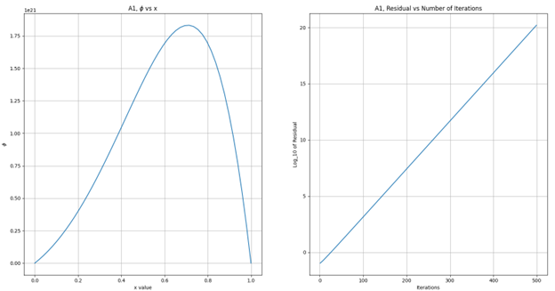
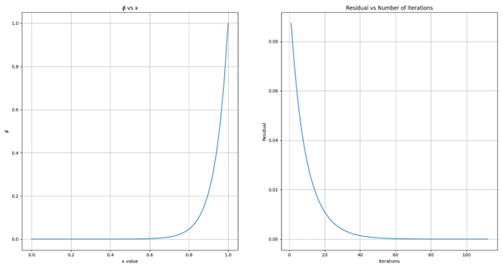
Next, we will show how errors diminish with iterative solvers.
In the Figure 3, we can see that after 3 iterations on a grid size of 30, the high frequency errors are gone. In Figures 4 and 5, we can see the low frequency error is decreasing slowly until 798 iterations when it reaches its final solution with a tolerance of 1e-6. This highlights how high frequency errors are resolved very quickly, while low frequency errors are resolved slowly.
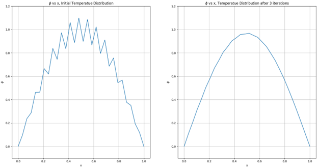
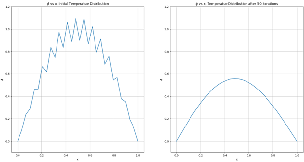
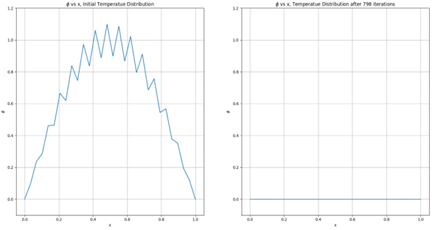
This is further shown in Figure 6, where we can see a large dip in residuals, which is from the high frequency errors, while the slow descent is from the low frequency error.
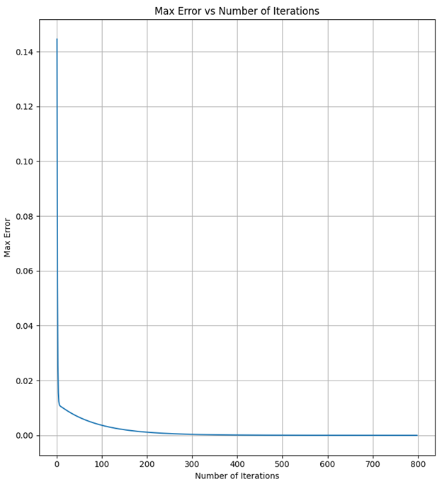
Now, we will see how these errors diminish with varying grid size. Figure 7 shows an initial guess with grid size of 6, which conveges after 138 iteration. A grid size of 6 converged 16 times quicker than a grid size of 2, indicating that low frequency errors diminish quicker with a smaller grid.
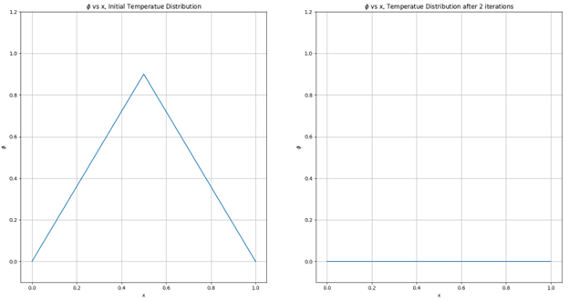
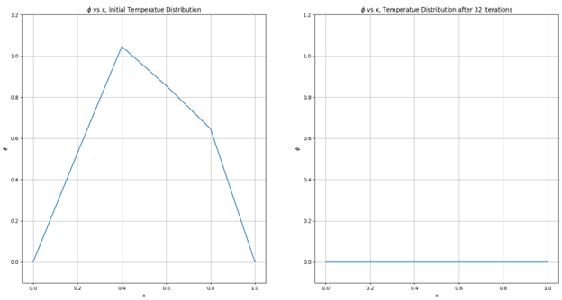
When refining the grid from 100 cells to 200, we can see that there is still a large low frequency error at 798 iterations. In figure 10, we can see that the error is even larger, meaning refining the grid makes low frequency errors more difficult to remove. However, we can apply over-relaxation to use more of the new solution and less of the old solution. In figure 11, we use a relaxation value of 1.8 for a grid size of 200, and the solution nearly converges at 798 iterations.
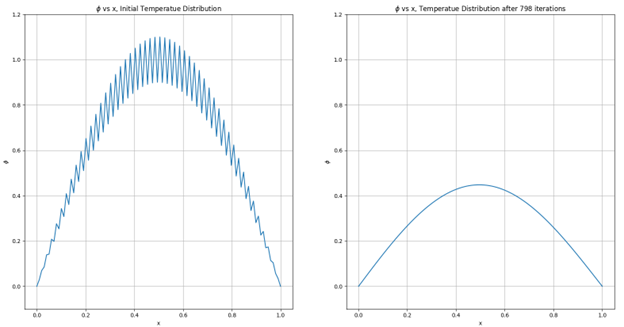
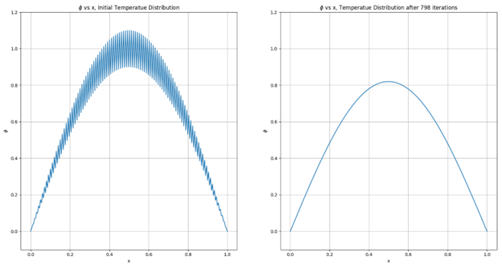
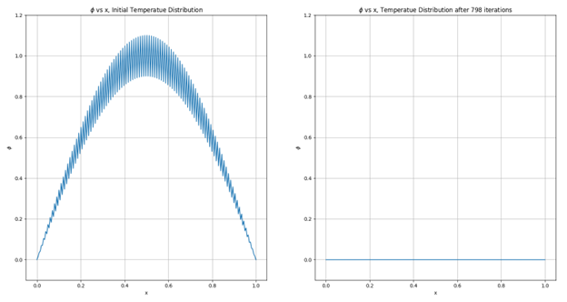